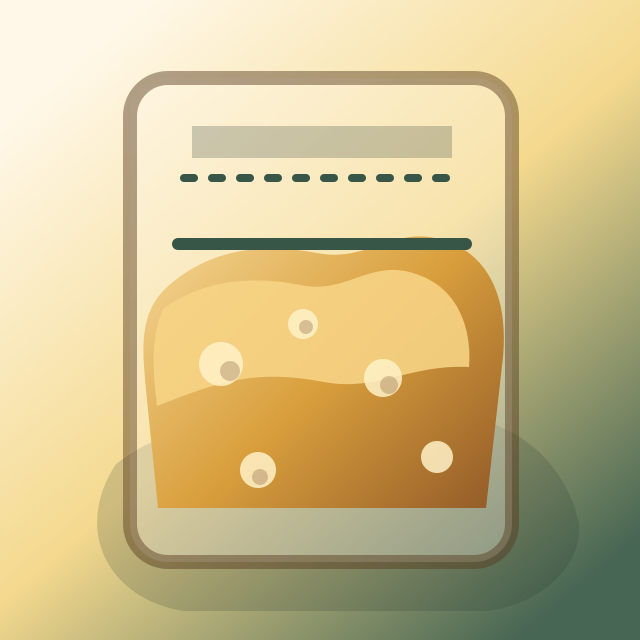

Add samples
Start sample
Beginning of bulk
Use a clear, straight-sided container and shoot from the side near counter height.
Current sample
Ready check
Match the first angle, distance, and lighting as closely as practical.
Readiness
Check the dough
The app combines the media comparison with a few cues bakers already use.
- Estimated rise
- --
- Gas activity
- --
- Confidence
- --